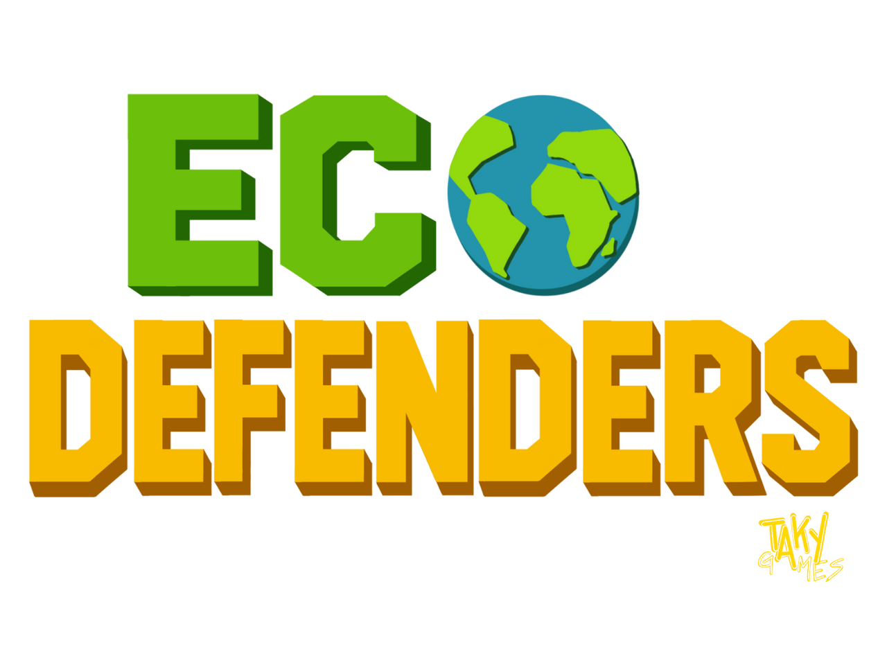
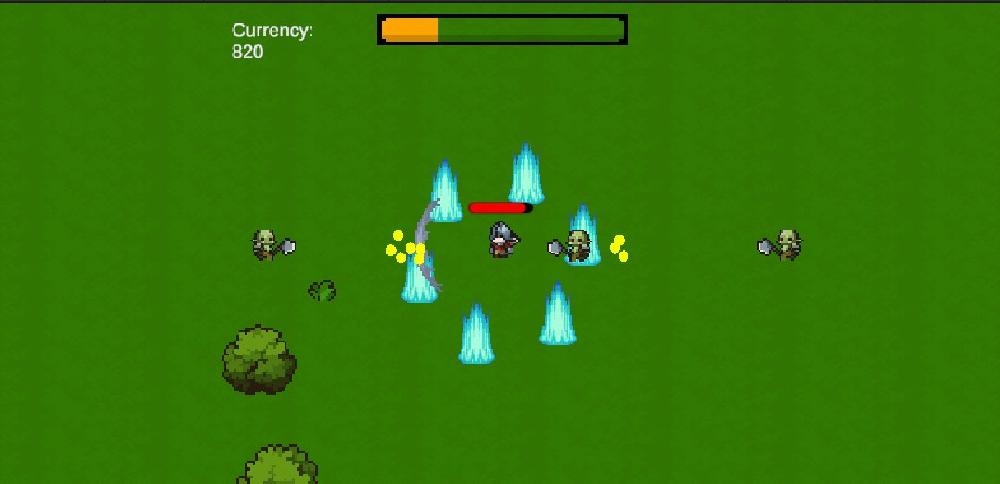

遊びを設計する。アイデアを、遊べる形にする。 Designing play. Turning ideas into playable experiences.
ゲームデザインを専攻する学生です。企画書・アイデア書・試作書の作成から、Unityでのプロトタイプ実装、プレイテストによる改善まで一貫して行っています。
I'm a game design student. I handle everything from writing planning documents to implementing prototypes in Unity and iterating through playtesting.
自己紹介About Me
Queensland University of TechnologyのBachelor of Games and Interactive Environmentsでゲームデザインを専攻する3年生です。ゲームプランナーとして企画、仕様設計、UI/UX設計に取り組み、少人数チームではUnityとC#を用いた実装も担当してきました。多国籍チームでのゲーム制作を通じて、プレイヤー視点の面白さと実装可能性を両立させることを大切にしています。
I am a third-year Game Design student in the Bachelor of Games and Interactive Environments at Queensland University of Technology. As a game designer and planner, I have worked on concept development, game specifications, and UI/UX design. In small teams, I have also implemented features using Unity and C#. Through working in multicultural teams, I have learned to balance engaging player experiences with practical development constraints.
制作スタンスDesign Philosophy
アイデアの面白さだけでなく、実際に実装できるか、プレイヤーに意図が伝わるかを考えながら企画しています。ゲームフロー、画面遷移図、仕様書、プロトタイプを活用し、チーム内の認識を揃えながら改善を重ねます。
I develop game concepts by considering not only whether an idea is interesting, but also whether it can be implemented effectively and clearly understood by players. I use game-flow diagrams, screen transitions, design specifications, and prototypes to align the team and iteratively improve the experience.
使用ツールTools
- 氏名NameYusei Nakajima
- 所属AffiliationQueensland University of Technology
- 専攻MajorゲームデザインGame Design
- 卒業予定Expected Graduation2026年11月〜12月Nov–Dec 2026
- 就職希望職種Seeking Roleゲームプランナー / デザイナーGame Planner / Designer
- 得意分野Focus Areas企画 / レベルデザイン / プロトタイピングPlanning / Level Design / Prototyping
- 使用ツールToolsUnity, C#
制作物一覧Selected Works
各作品ページでは、企画書・アイデア書・試作書などの資料、ゲームプレイ映像、実際に遊べるUnity WebGLビルドを掲載しています。
Each project page includes planning documents, idea sheets, prototype reports, gameplay videos, and playable Unity WebGL builds.

ECO DEFENDERSECO DEFENDERS
建設業の職人をヒーローにした教育タワーディフェンス。4人チームで、企画・GDD作成・アビリティ設計・UI設計・コーディングを担当しました。
An educational tower-defense game built around construction trades. On a four-person team I handled planning, the GDD, ability design, UI design, and programming.
詳細を見る →View Details →
Deepspace CybercourtDeepspace Cybercourt
車椅子VRテニスから進化したSFラケットスポーツ。4人チームで、ラケットのSFX/VFX実装・物理挙動調整・グリップ操作のコーディングを担当しました。
A sci-fi racket-sport that evolved from a wheelchair VR tennis pitch. On a four-person team I owned the racket's SFX/VFX implementation, physics tuning, and grip-input coding.
詳細を見る →View Details →
HollowsteadHollowstead
チャームと使い魔で強くなるローグライト・サバイバル。8人チームで、チャーム/スキルのアイデア考案とコーディング実装を担当しました。
A rogue-lite survival game built around charms and familiars. On an eight-person team I owned the charm/skill ideas and their coding implementation.
詳細を見る →View Details →お問い合わせContact
ポートフォリオへのご感想やお仕事のご相談は、以下からお気軽にご連絡ください。
Feel free to reach out below with feedback on this portfolio or work inquiries.